AbiWord is a word processing program suitable for a wide variety of word processing tasks.
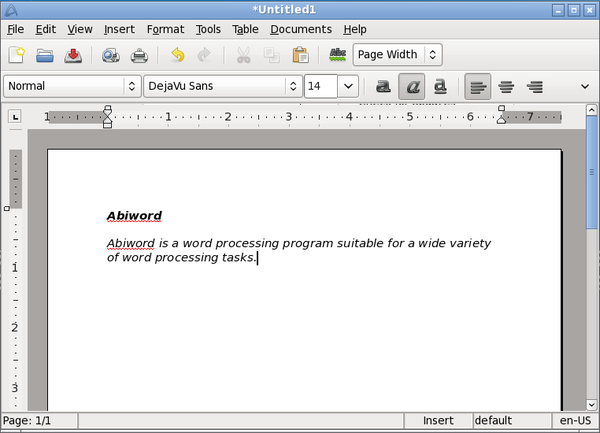
Asunder is an Audio CD ripper and encoder for Linux. You can use Asunder to save tracks from an Audio CD as any of WAV, MP3, OGG, FLAC, WavPack, Musepack, AAC, and Monkey's Audio files.
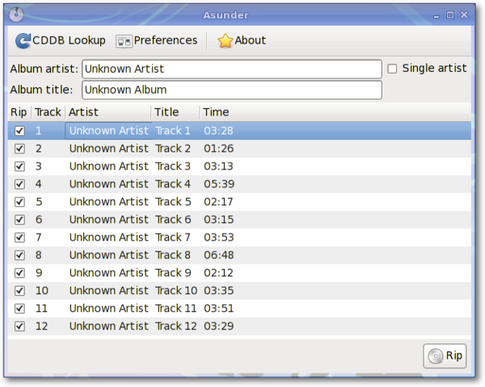
Brasero is an application to burn CD/DVD. It is designed to be as simple as possible and has some unique features to enable users to create their discs easily and quickly.
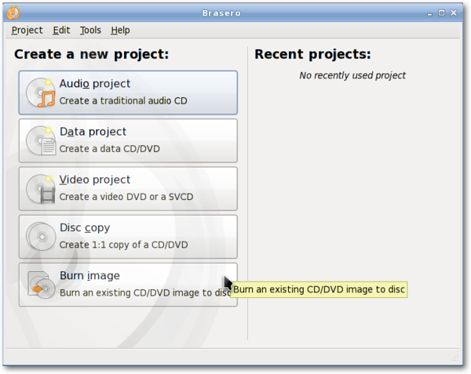
Catfish is a handy file searching tool which provides a unified, lightweight and simple interface for different search engines such as find, (s)locate, doodle, tracker and beagle.
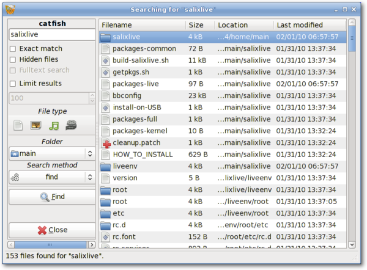
Claws Mail is an open source email and news client. It offers easy configuration and an abundance of features. It stores mail in the MH mailbox format as well as the Mbox mailbox format via a plugin.
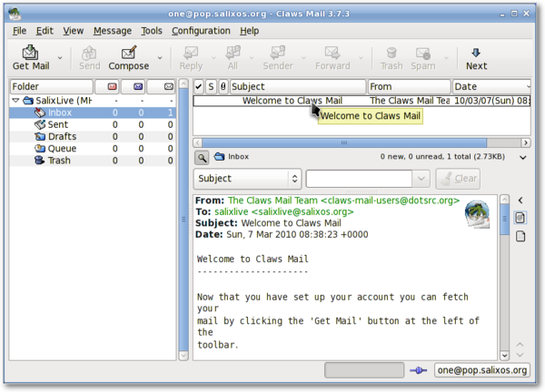
Document Viewer is a very lightweight, simple PDF document viewer.
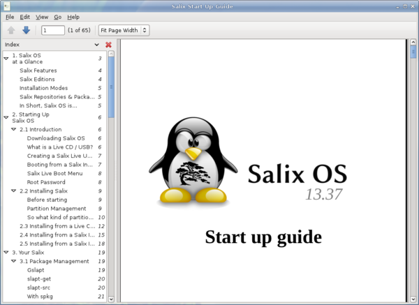
ePDFView is a lightweight PDF document viewer that only uses the GTK+ and Poppler libraries. It opens PDF files, save copies of documents, and has support for printing using CUPS.

Exaile is a music manager which incorporates automatic fetching of album art, lyrics fetching, Last.fm scrobbling, support for many portable media players, Internet radio such as Shoutcast, tabbed playlists, etc.
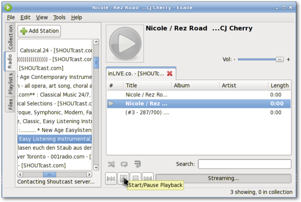
Engrampa is an archive manager. Supported archive types include gzip, bzip, bzip2, compress, lzop, zip, jar, lha, rar, zoo, arj, 7-zip, etc.
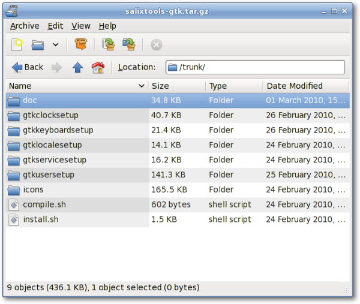
Mozilla Firefox is a free and open source web browser with tabbed browsing, spell checking, incremental find, private browsing and numerous plugins.
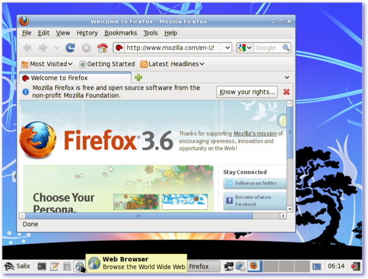
Galculator is a calculator featuring two user modes: basic and scientific mode. Basic mode is intended for simple computations while Scientific Mode is Galculator's state of the art.
Geany is a small and lightweight Integrated Development Environment which only has a few dependencies and is independent of any particular Desktop Environment.
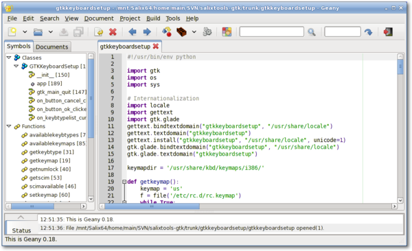
gFTP is an FTP client with both a text and a GUI interface. gFTP aims to be simple to use yet powerful.
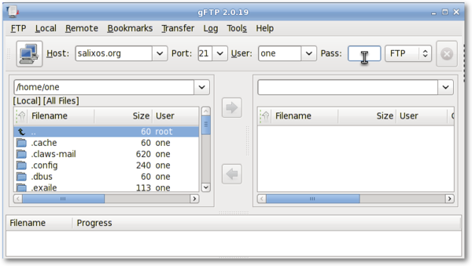
Gigolo is a frontend to easily manage connections to remote filesystems using GIO/GVfs. It allows you to quickly connect/mount a remote filesystem and browse local networks shares.
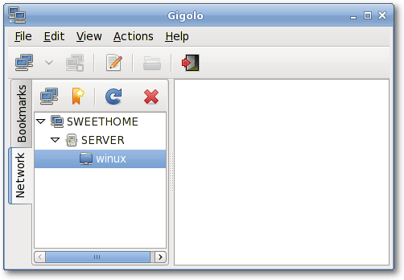
GIMP (GNU Image Manipulation Program) is an image retouching and editing tool. In addition to offering free-form drawing, it can accomplish essential image workflow steps such as resizing, editing, and cropping photos, combining multiple images, converting between different image formats as well as create basic animated images in GIF.
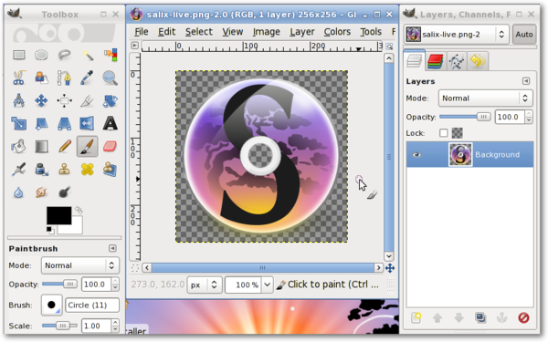
The goal of Gnumeric is to be the best possible spreadsheet. While not attempting to clone existing applications, Gnumeric can, however, read files saved with other spreadsheets and offers a customizable feel that attempts to minimize the costs of transition.
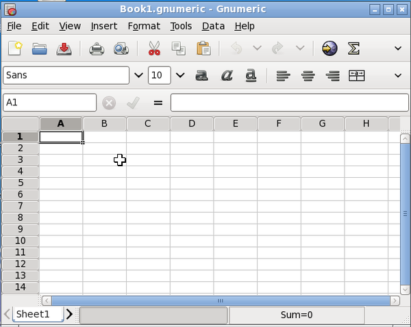
GTKMan is a simple manual page viewer. Manual pages are viewed by specifying their name and optionally the section they are in, just as with the original man command. The manual pages are displayed in simple text form using the default system monospace font.
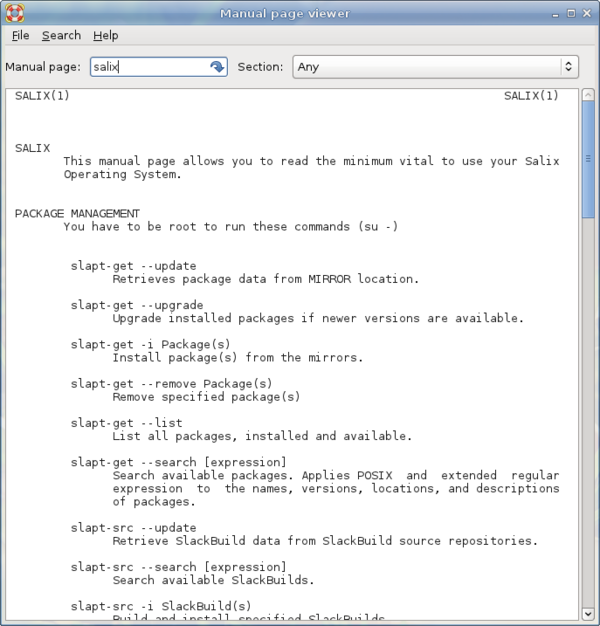
Ibus is a new generation of input method editors after SCIM. It supports for more than thirty languages (Chinese, Japanese, Korean and other languages) in both qt and non-qt environments. (You may have to go to qtconfig and select "ibus" instead of "xim" in "Interface" -> "Default Input Method").
ISO Master is an application for creating and modifying ISO9660 files (ISO images). Its functionalities include: creating an ISO image from scratch, adding or removing files and directories to/from a CD image, and creating bootable CDs using various boot record types.
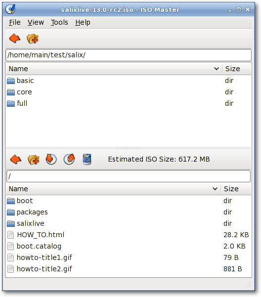
Leafpad is a very light simple text editor with printing support.
Meld is a visual diff and merge tool. You can compare two or three files and edit them in place (diffs update dynamically). You can compare two or three folders and launch file comparisons. You can browse and view a working copy from popular version control systems such as CVS, Subversion, Bazaar-ng and Mercurial.
Midori (Japanese for green) is a web browser that aims to be lightweight and fast. It uses the WebKit rendering engine.
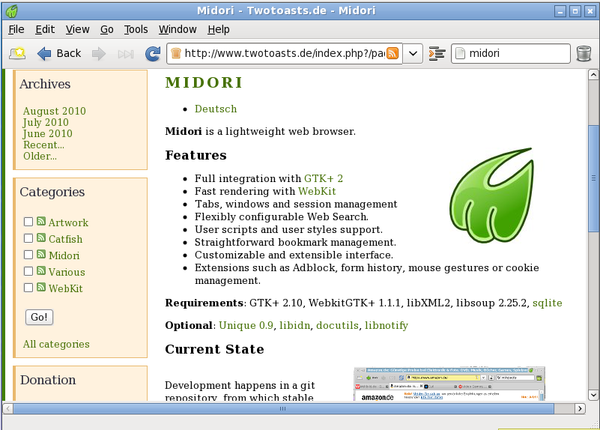
mtPaint is a painting program designed to easily create pixel art and manipulate digital photos. Due to its efficient design it can run on older PC hardware (e.g. a 200MHz CPU and 16MB of free RAM).

LibreOffice is the leading open-source office software suite for word processing, spreadsheets, presentations, graphics, databases and more. It is available in many languages and works on all common computers. It stores all your data in an international open standard format and can also read and write files from other common office software packages.
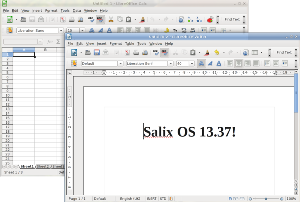
Orage provides a calendar which integrates nicely into the Xfce Desktop Environment. It is highly configurable and supports alerts based on dates. It warns you with pop-up or audible alarms. As it is an application for everyday use, it launches itself in the background and can be accessed using the Orage Clock plugin for the panel. Simply click on a date to display or set the agenda for the day.
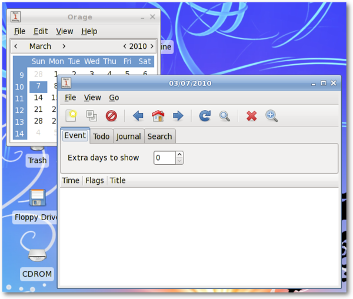
Parole Media Player is a media player (audio and video) which utilizes the GStreamer framework for playback.
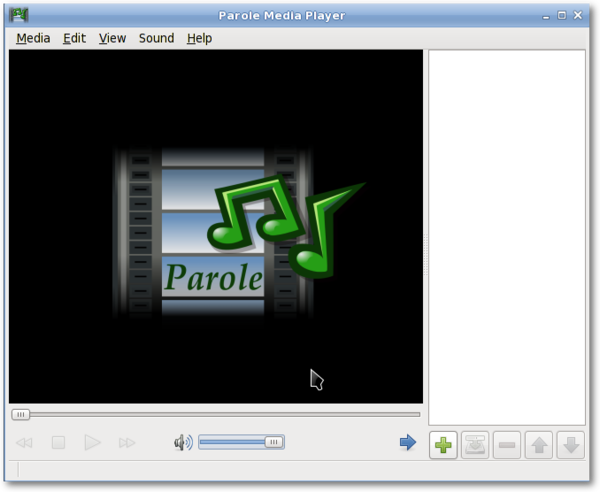
Pidgin is an easy to use and free chat client which lets you log in to accounts on multiple chat networks simultaneously. Pidgin is compatible with numerous chat networks out of the box: AIM, ICQ, Google Talk, Jabber/XMPP, MSN Messenger, Yahoo, etc.
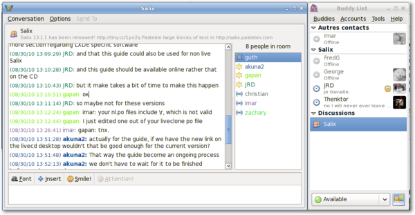
PiTiVi is an easy to use video editor. The interface is intuitive to most users. Just by dragging your video clips, you can create your own film clips.
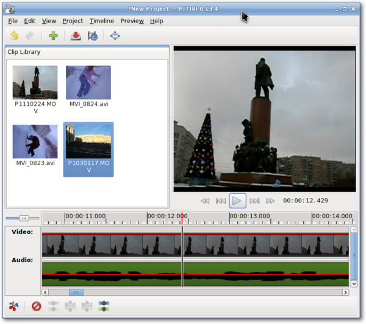
Simple Scan allows you to scan your documents/photos with your scanner or even with your webcam!
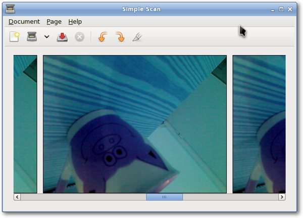
Transmission is a BitTorrent client that is simple, lightweight and powerful.
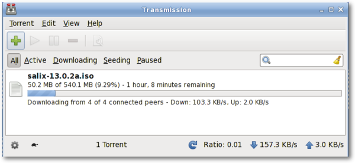
Viewnior is a fast and lightweight picture viewer.
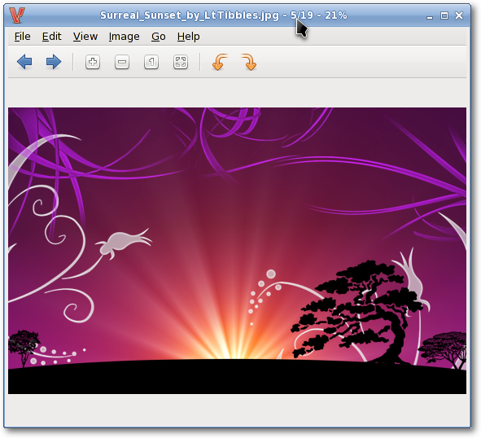
Whaaw! Media Player will play any audio/video files which GStreamer can manage. It supports full-screen mode, seeking, changing video color settings and more. It is intended to be a basic media player with few dependencies.
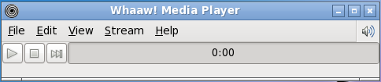
Zim is a bit of everything. In essence, it is a desktop wiki, and it allows you a great deal of flexibility regarding what you can do with it. For instance, one can use it to keep track of TODO lists of ideas, to take notes in a meeting, as a drafting tool for blog entries, emails and so on.